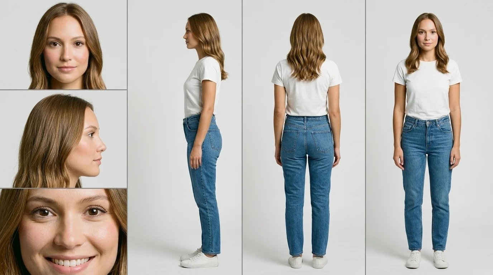
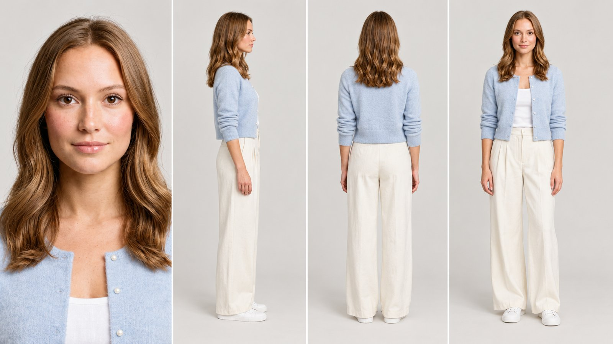

Cliente ideal 1 de 2 · Zona oriente
Antonia
“Si ya me atendieron bien, vuelvo.” La compradora que regresa por la atención y trae su auto en parte de pago.
Cómo leer esta ficha
Ficha
Así se ve Antonia


Imágenes generadas con IA · personaje ficticio, no es una persona real · USO INTERNO, no usar como pieza publicitaria ILUSTRATIVO. La ficha dice 41 años y la persona de las imágenes se ve más joven: decisión pendiente de Beto NO VERIFICADO.
Detonante y contexto de uso
- El auto actual ya tiene años o la familia necesita más espacio para colegio, actividades y viajes de fin de semana HIPÓTESIS.
- En Lo Barnechea y Vitacura más del 60 % va al trabajo en auto (Censo 2024, vía The Clinic) WEB. Para ella el auto es de uso diario, no opcional HIPÓTESIS.
- En Lo Barnechea las transferencias premium ya son el 42 % de lo transferido y en Las Condes y Lo Barnechea crecieron 57 % (ene-26 vs ene-25) PLAN.
Por qué elige Portillo
- Atención: es el motivo más citado por los promotores de la zona (39 menciones codificadas en 60 promotores) DATO.
- Rapidez del proceso: segundo motivo (14 menciones) DATO.
- Volvería a comprar: 60 de 60 promotores de la zona dicen que sí DATO.
- Valora seriedad, respaldo y un auto bien presentado más que el precio más bajo HIPÓTESIS.
“Excelente atención, preocupados en todo momento. Ejecutiva muy profesional.”CR_2025-Venta-Usados#3764 · Venta-Usados DATO
“Los autos estan en buen estado, limpios, ordenados y la oficina muy bien preparada”CR_2025-Venta-Usados#3290 · Venta-Usados DATO
“Atención y respaldo”CR_2025-Venta-Usados#3514 · Venta-Usados DATO
Qué lo haría irse
- Tasación que no calza: 39,6 % de los detractores de usados del grupo con parte de pago le puso 1-2 a ese ítem (42 de 106) DATO. Es referencia del grupo, no de Portillo.
- Auto con detalles al recibirlo: 22 % de los detractores del grupo DATO.
- Entrega sin fecha o con documentos pendientes: el dolor más frecuente del grupo, 77,3 % de los detractores DATO.
- Reseñas: Portillo tiene 3,0 ★ en Google y las boutiques vecinas 4,7 a 5,0 ★ PLAN.
“Los valores ofrecidos en la página web por vehículos en parte de pago no son”CR_2025-Venta-Usados#2256 · Venta-Usados DATO
“al entregarme no enciende porque se descargo la batería”CR_2025-Venta-Usados#3477 · Venta-Usados DATO
Su voz
“No tengo tiempo para recorrer diez automotoras. Si ya me atendieron bien, vuelvo. Necesito que me reciban mi auto a un precio justo, que el que me llevo esté impecable y que me digan cuándo lo retiro.”
Parafraseada desde #3764, #3514 (promotores) y #2256, #3477 (dolores) DATO ILUSTRATIVO.
Mapa de empatía
Piensa y siente
- Quiere resolver rápido y sin sorpresas; su tiempo es lo más escaso HIPÓTESIS.
- Confía en quien ya la atendió bien DATO.
Oye
- La recomendación de conocidos (7 de 60 llegaron así) DATO.
- La opinión de su pareja sobre el auto en parte de pago HIPÓTESIS.
Ve
- Su barrio compra premium: 42 % de las transferencias en Lo Barnechea PLAN.
- Boutiques vecinas con 4,7–5,0 ★ PLAN.
Dice y hace
- Vuelve a la sucursal donde ya compró (13 de 60) DATO.
- Pregunta primero cuánto le dan por su auto HIPÓTESIS.
Esfuerzos y miedos
- Que le tasen bajo o distinto a lo de la web DATO.
- Recibir el auto con detalles o sin fecha de entrega DATO.
Resultados y éxito
- Auto impecable, entregado el día acordado y con todos los papeles HIPÓTESIS.
- Sentir que la atendieron como cliente de siempre DATO.
Journey en Portillo
| Etapa | Canal y qué busca | Dolor que hay que resolverle | Qué hace Portillo (plan) |
|---|---|---|---|
| Interés | Le recomiendan Portillo o recuerda su compra anterior; revisa el stock en la web HIPÓTESIS. | Portillo no aparece en orgánico en 0 de 8 búsquedas clave de la zona PLAN. | S1: ordenar fichas de Google y precios PLAN. |
| Consideración | Pregunta por su tasación y por SUV de su tramo HIPÓTESIS. | Solo 16 % de las tasaciones llega a inspección (red: 26 %) PLAN. | Tasador el fin de semana e inspección agendada al cotizar PLAN. |
| Compra | Firma con parte de pago y crédito o pie HIPÓTESIS. | Precio o ficha que no coinciden (39,9 % de detractores del grupo) DATO. | Ficha única con precio y cuota; inspección y garantía visibles PLAN. |
| Retención | Espera su auto y sus papeles HIPÓTESIS. | Entrega y documentos: 77,3 % y 16 % de detractores del grupo DATO. | Espacio de entrega dedicado y kit de entrega PLAN. |
| Advocacy | Recomienda y vuelve para el próximo auto (60 de 60 volverían) DATO. | Si no la invitan a reseñar, la reseña no llega HIPÓTESIS. | QR de reseña en la entrega PLAN. |
Bajada de comunicación
TOFU
SUV familiares seminuevos de la zona y cómo se prepara un seminuevo antes de entregarlo, sin cifras de inspección no respaldadas HIPÓTESIS.
MOFU
Cómo se calcula el valor de tu auto en parte de pago, paso a paso HIPÓTESIS.
BOFU
Agenda tu tasación e inspección este fin de semana en La Dehesa HIPÓTESIS.
Qué del plan S1–S4 le habla
- S1 Ordenar la casa: fichas de Google y precios, para que la encuentre quien la recomendó PLAN.
- S3 Convertir mejor: ficha premium con garantía y tasación con inspección agendada PLAN.
- S4 Escalar al peak: presupuesto de enero, cuando ella cambia de auto PLAN HIPÓTESIS.
Estándar en sucursal que lo convence
- Autos lavados a diario y ficha empastada con precio y cuota PLAN.
- Tasador el fin de semana PLAN.
- Entrega en espacio dedicado, con kit y QR de reseña PLAN.
- Trato diferenciado y zona lounge PLAN.
Qué lo validaría (preguntas para sala)
- ¿Qué ticket, pie y forma de pago traen las compradoras de SUV en La Dehesa y Padre Hurtado? NO VERIFICADO
- ¿Qué porcentaje llega con auto en parte de pago y qué auto es? NO VERIFICADO
- ¿Quién decide en el hogar y quién viene a la sucursal? NO VERIFICADO
- ¿Cuántas compradoras ya eran clientes de Portillo? NO VERIFICADO
Bloqueos abiertos
- Export de ventas ene–oct 2026 con ticket, modelo y forma de pago: Beto.
- Mapeo de las sucursales del plan con las de la encuesta: Beto / Iván Balaguera.
- Marca que firma el seminuevo (Portillo o Clicar): Beto / Iván Balaguera / equipo comercial.
- Stock por sucursal (tabla vacía del plan): responsable de stock.
Tarjeta de evidencia
Conteo de etiquetas en esta ficha (77 en total). Mide la forma de la evidencia, no su solidez.
n que la respalda: 60 promotores de sucursales Portillo zona oriente (ene-2025 a nov-2026) DATO; dolores de 313 detractores del grupo, no solo Portillo (Portillo tiene 10) DATO.